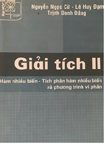

-

Các giáo trình cơ bản
Trang bị các kiến thức cơ bản về đại số, giải tích toán học và toán ứng dụng.
Nó đóng vai trò then chốt để học tập các môn khác trong các trường kĩ thuật và nghiên cứu tiếp sau này.• Lí thuyết Xác suất và Thống kê toán
• Giải tích II
• Giải tích I
• Đại số -

Các giáo trình bài tập
Các giáo trình bài tập thực hành. Có hướng dẫn, lời giải và đáp số.
Cuối sách bài tập Giải tích I có các đề thi học phần để bạn đọc tham khảo.• Bài tập Đại số
• Bài tập Giải tích I
• Bài tập Giải tích II -

Hình học hyperbolic (Bolyai-Lobasepxki)
Tổng quan về hình học và hình học xạ ảnh.
Các mô hình hình học hyperbolic.
Không tồn tại hình chữ nhật (tứ giác có 4 góc vuông) trong hình học hyperbolic.
Các góc trong một tam giác xác định độ dài các cạnh của tam giác đó.
Các định lí Pitago, định lí hàm số sin, định lí hàm số cos trong hình học hyperbolic. -

Định lí Euler và một chứng minh đẹp
Một chứng minh đẹp của Hajós György.
Từ định lí Euler suy ra chỉ tồn tại 5 loại khối đa diện đều: tứ diện đều, hình lập phương, khối bát diện đều (8 mặt), khối thập nhị diện đều (12 mặt) và khối nhị thập diện đều (20 mặt).
Các khối đa diện bán đều (còn được gọi là gần đều). Các khối đa diện bán đều được tạo ra từ các khối đa diện đều.
• Đề thi tuyển sinh vào lớp 6 và Các bài toán hình cấp II kinh điển
• Một bài toán hay từ kì thi
Toán học trẻ quốc tế (IIMC) 2022 trình độ lớp 6
( Tham khảo đề thi IIMC năm 2021 )
• Kiểm tra tính đúng/sai của phép nhân
•Tìm chỗ sai. Phương trình x2+x+1=0 (1) do x ≠ 0, tương đương với phương trình x+1+ 1 x = 0 (2). Trừ vế với vế (1) và
(2) ta được
x2 = 1 x . Suy ra phương trình đã cho có nghiệm x = 1!
• Bài toán đi qua sa mạc
• Bức tranh dưới là biểu tượng đẹp cho cách chứng minh định lí Pitago!
 • Chỉ sử dụng compa hãy xác định tâm đường tròn
• Chỉ sử dụng compa hãy xác định tâm đường tròn
• Chỉ sử dụng compa hãy xác định tâm đường tròn
• Văn chương trào phúng thời Covid của Hồ Anh Thái.
• Tự bạch của PGS Nguyễn Tường, nguyên chủ nhiệm Bộ môn Toán, ĐHXD.
Anh là một tấm gương về tự học, tự nghiên cứu về toán. Gần 90 tuổi vẫn say mê làm toán. Chúc anh mạnh khỏe và hạnh phúc cùng con cháu. • Bài toán cầu phương hình tròn và người sáng tạo ra trò chơi Trí Uẩn • Về Giáo sư Mogyoródi József, người thầy dạy chúng tôi ở đại học ELTE Budapest (1971) và sau này là giáo sư hướng dẫn tôi làm luận văn TS (1986-1989). Bài viết về GS do các đồng nghiệp ở ELTE viết sau chuyến ra đi đột ngột của ông năm 1990. • Video của bạn Lê Trung Hùng - Kỉ niệm 50 năm ngày sang Hungary • Các thầy cô đã nghỉ hưu Bộ Môn Toán thăm anh Nguyễn Tường • Chuyện anh Nguyễn Tường mua thần dược • Ông Lê Bá Cầu, chủ tịch hội Cựu Giáo Chức khoa CNTT ĐHXD đọc điếu văn vĩnh biệt PGS Vũ Viết Đào • Kỉ niệm 40 năm ngày phát minh ra Rubic • Về Katalin Karikó. Bà được coi là một trong những người phát minh ra công nghệ mRNA, từ đó tạo ra vaccine COVID-19 tiên tiến nhất thế giới, một ứng viên sáng giá cho giải Nobel. • Bài viết của Nguyễn Trung về cuộc chiến ở Ukraina. • Người sao Hỏa. Về các nhà khoa học Hungary đầu thế kỉ XX • Trích "Đông Âu anh hùng truyện" đăng trong Viet-studies.net.
Nhân vật đăng trong bài, H. là ai nhỉ? • Đại học Đông Dương: Khái quát một lịch sử thăng trầm • Mở trang lưu trữ
Anh là một tấm gương về tự học, tự nghiên cứu về toán. Gần 90 tuổi vẫn say mê làm toán. Chúc anh mạnh khỏe và hạnh phúc cùng con cháu. • Bài toán cầu phương hình tròn và người sáng tạo ra trò chơi Trí Uẩn • Về Giáo sư Mogyoródi József, người thầy dạy chúng tôi ở đại học ELTE Budapest (1971) và sau này là giáo sư hướng dẫn tôi làm luận văn TS (1986-1989). Bài viết về GS do các đồng nghiệp ở ELTE viết sau chuyến ra đi đột ngột của ông năm 1990. • Video của bạn Lê Trung Hùng - Kỉ niệm 50 năm ngày sang Hungary • Các thầy cô đã nghỉ hưu Bộ Môn Toán thăm anh Nguyễn Tường • Chuyện anh Nguyễn Tường mua thần dược • Ông Lê Bá Cầu, chủ tịch hội Cựu Giáo Chức khoa CNTT ĐHXD đọc điếu văn vĩnh biệt PGS Vũ Viết Đào • Kỉ niệm 40 năm ngày phát minh ra Rubic • Về Katalin Karikó. Bà được coi là một trong những người phát minh ra công nghệ mRNA, từ đó tạo ra vaccine COVID-19 tiên tiến nhất thế giới, một ứng viên sáng giá cho giải Nobel. • Bài viết của Nguyễn Trung về cuộc chiến ở Ukraina. • Người sao Hỏa. Về các nhà khoa học Hungary đầu thế kỉ XX • Trích "Đông Âu anh hùng truyện" đăng trong Viet-studies.net.
Nhân vật đăng trong bài, H. là ai nhỉ? • Đại học Đông Dương: Khái quát một lịch sử thăng trầm • Mở trang lưu trữ
Các bài toán dựng hình
- Dựng đa giác đều 17 cạnh (Cách dựng của Gauss)
- Bài toán Malfatti
- Bài toán Apollonius (Dựng đường tròn tiếp xúc
với 3 đường tròn cho trước) - Dựng tiếp tuyến với đường tròn (Dựng hình chỉ dùng thước kẻ)
- Định lí Morley (Chứng minh bằng dựng hình)
- Dựng đường tròn qua 3 điểm (Dựng hình chỉ dùng Compa)